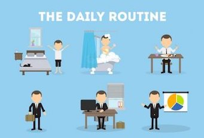
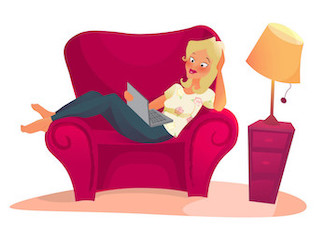
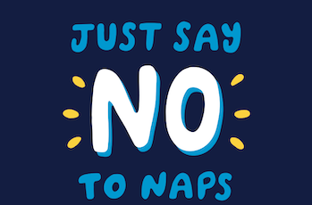
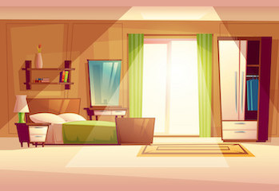
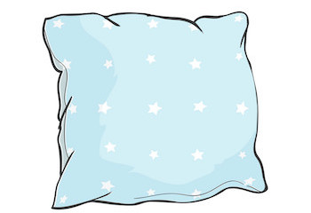
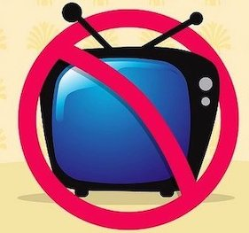
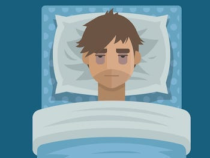
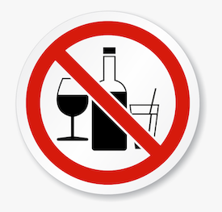

Understanding Sleep
How Much Sleep Do You Need?
Most of us know that getting a good night’s sleep is important, but too few of us actually make those eight or so hours between the sheets a priority. For many of us with sleep debt, we’ve forgotten what “being really, truly rested” feels like.
To further complicate matters, stimulants like coffee and energy drinks, alarm clocks, and external lights—including those from electronic devices—interferes with our "circadian rhythm" or natural sleep/wake cycle.
Sleep needs vary across ages and are especially impacted by lifestyle and health. To determine how much sleep you need, it's important to assess not only where you fall on the "sleep needs spectrum," but also to examine what lifestyle factors are affecting the quality and quantity of your sleep such as work schedules and stress.
National Sleep Foundation
Eighteen leading scientists and researchers came together to form the National Sleep Foundation’s expert panel tasked with updating the official recommendations. The panelists included six sleep specialists and representatives from leading organizations including the American Academy of Pediatrics, American Association of Anatomists, American College of Chest Physicians, American Congress of Obstetricians and Gynecologists, American Geriatrics Society, American Neurological Association, American Physiological Society, American Psychiatric Association, American Thoracic Society, Gerontological Society of America, Human Anatomy and Physiology Society, and Society for Research in Human Development. The panelists participated in a rigorous scientific process that included reviewing over 300 current scientific publications and voting on how much sleep is appropriate throughout the lifespan.
Sleep Chart Based On Age
- Newborns (0-3 months): Sleep range narrowed to 14-17 hours each day (previously it was 12-18)
- Infants (4-11 months): Sleep range widened two hours to 12-15 hours (previously it was 14-15)
- Toddlers (1-2 years): Sleep range widened by one hour to 11-14 hours (previously it was 12-14)
- Preschoolers (3-5): Sleep range widened by one hour to 10-13 hours (previously it was 11-13)
- School age children (6-13): Sleep range widened by one hour to 9-11 hours (previously it was 10-11)
- Teenagers (14-17): Sleep range widened by one hour to 8-10 hours (previously it was 8.5-9.5)
- Younger adults (18-25): Sleep range is 7-9 hours (new age category)
- Adults (26-64): Sleep range did not change and remains 7-9 hours
- Older adults (65+): Sleep range is 7-8 hours (new age category)
Myths About Sleep
Snoring Is No Big Deal
Although snoring may be harmless for most people, it can be a symptom of a life threatening sleep disorder called sleep apnea, especially if it is accompanied by severe daytime sleepiness.
Sleep apnea is characterized by pauses in breathing that prevent air from flowing into or out of a sleeping person’s airways. People with sleep apnea awaken frequently during the night gasping for breath. The breathing pauses reduce blood oxygen levels, can strain the heart and cardiovascular system, and increase the risk of cardiovascular disease.
Snoring on a frequent or regular basis has been directly associated with hypertension. Obesity and a large neck can contribute to sleep apnea. Sleep apnea can be treated; men and women who snore loudly, especially if pauses in the snoring are noted, should consult a physician.
Issues With Falling Asleep Are Caused By Insomnia
Difficulty falling asleep is but one of four symptoms generally associated with insomnia. The others include waking up too early and not being able to fall back asleep, frequent awakenings, and waking up feeling unrefreshed. Insomnia can be a symptom of a sleep disorder or other medical or psychological/psychiatric problem, and can often be treated.
According to the National Sleep Foundation's 2002 Sleep in America poll, 58 percent of adults in this country reported at least one symptom of insomnia in the past year. When insomnia symptoms occur more than a few times a week and impact a person’s daytime functions, the symptoms should be discussed with a doctor or other health care provider.
Sleepiness During The Day Means You Didn't Get Enough Sleep
Excessive daytime sleepiness is a condition in which an individual feels very drowsy during the day and has an urge to fall asleep when he/she should be fully alert and awake. The condition, which can occur even after getting enough nighttime sleep, can be a sign of an underlying medical condition or sleep disorder such as narcolepsy or sleep apnea.
These problems can often be treated, and symptoms should be discussed with a physician. Daytime sleepiness can be dangerous and puts a person at risk for drowsy driving, injury, and illness and can impair mental abilities, emotions, and performance.
You Need Less Sleep The Older You Get
Sleep experts recommend a range of seven to nine hours of sleep for the average adult. While sleep patterns change as we age, the amount of sleep we need generally does not. Older people may wake more frequently through the night and may actually get less nighttime sleep, but their sleep need is no less than younger adults. Because they may sleep less during the night, older people tend to sleep more during the day. Naps planned as part of a regular daily routine can be useful in promoting wakefulness after the person awakens.
Your Brain Rests While You Are Asleep
The body rests during sleep, however, the brain remains active, gets "recharged," and still controls many body functions including breathing. When we sleep, we typically drift between two sleep states, REM (rapid eye movement) and non-REM, in 90-minute cycles. Non-REM sleep has four stages with distinct features, ranging from stage one drowsiness, when one can be easily awakened, to "deep sleep" stages three and four, when awakenings are more difficult and where the most positive and restorative effects of sleep occur.
However, even in the deepest non-REM sleep, our minds can still process information. REM sleep is an active sleep where dreams occur, breathing and heart rate increase and become irregular, muscles relax and eyes move back and forth under the eyelids.
Factors That Affect Sleep
Screen Time and Insomnia
For teenagers, sleep plays a critical role in staying healthy, feeling happy, maintaining good grades, and doing well in sports. But sleep doesn’t come easily for some teens. For those who struggle, it’s important to look at their electronic use. An increased amount of screen time throughout the day has been linked to insomnia and symptoms of depression in adolescents. This can include social messaging, web surfing, watching TV, and gaming, in addition to using the internet for schoolwork. The presence of electronic devices in teenagers’ lives isn’t going anywhere, anytime soon, so it’s important to understand its effects on sleep and how to find a better balance.
The Blue Light Effect
Electronic devices emit an artificial blue light that can suppress the release of the body’s sleep-inducing hormone, melatonin. In turn, this can interfere with the body’s natural internal clock that signals when it’s time to sleep and wake up. The more time teens spend in front of an electronic device, especially in the evening, the greater the delay in the release of melatonin, making sleep a challenge. They may experience problems falling asleep as well as difficulty staying asleep. As a result, these teens sleep fewer overall hours; over time, that sleep deprivation can lead to symptoms of depression.
Getting Back on Track
Limiting overall daily screen time can help improve sleep issues, but most importantly, restricting use right before bed can play a key role in helping teens fall asleep faster and improve sleep quality. Consider setting a digital curfew one to two hours before bedtime (the earlier, the better). Create a sleep-positive bedroom environment by encouraging teens to read before bed rather than texting to wind down. Some parents institute a tech-free bedroom policy—no TV, computer, or smart phone allowed in the sleeping space, at least during the night.
There are many benefits to today’s tech-driven world: Access to more information, the ability to connect with others in an emergency, and a chance to make friends with new people in new places. Managing the amount of time adolescents spend plugged into their electronic devices helps give them the benefits without as many drawbacks, especially when it comes to sleep.

Excessive Sleep and Your Metabolism
Few people worry about spending too much time in bed. An extra hour or two of stolen sleep on Sunday can feel like heaven after a long week of work and family activities. But did you know that clocking more than the recommended amount can negatively impact your health?
For most adults, getting between seven and nine hours of sleep a night is ideal. Although a small percentage of people actually need 10 hours, for most adults sleeping more hours than the recommended amount may indicate an underlying health concern. In addition, regularly sleeping more than the suggested amount may increase the risk of obesity, headache, back pain, and heart disease. And a recent study discovered that oversleeping can put the body at risk for metabolic issues. Learn more about how excessive sleep can impact your metabolism.
In a recent study, researchers analyzed the health, medical histories, and sleep totals of a group of more than 130,000 men and women ages 40 to 69. With this data, researchers were able to link sleeping less than six hours, as well as sleeping more than 10 hours, to cases of metabolic syndrome and related symptoms.
Understanding Your Metabolism
People diagnosed with metabolic syndrome have at least three of the following symptoms: Excess fat around the middle, hypertension, low levels of HDL or “good” cholesterol, high fasting blood glucose and high triglyceride levels. In the study, 29 percent of men were deemed to have metabolic syndrome, while a quarter of women showed signs of it.
There are some notable differences between genders when it comes to sleep and metabolism. In particular, women who sleep less than six hours a night may have more belly fat than those who sleep longer, while men are likely to have both bigger waists and metabolic syndrome if they sleep less than six hours. On the other hand, women who sleep 10 or more hours have a much higher risk for metabolic syndrome, while in men it correlates to higher triglyceride levels as well.
For most people, feelings of excessive sleepiness that arise even if they meet the recommended seven to nine hours a night may reflect recent lifestyle changes, such as a new work schedule, job relocation, or increase in physical exercise. It could also be a sign of a disorder such as sleep apnea that results in poor sleep quality, leaving people tired in the morning. But because there may be other health issues at play, including Parkinson’s, depression, anxiety, infections and gastrointestinal disorders, if you are experiencing excessive sleepiness, it’s important to mention it to your doctor. Take the time to describe your symptoms in detail which will help your doctor diagnose your condition and recommend the best treatment fit for you.
Tips for Better Sleep
Counting Sheep
One
Stick to a sleep schedule of the same bedtime and wake up time, even on the weekends. This helps to regulate your body's clock and could help you fall asleep and stay asleep for the night.
Two
Practice a relaxing bedtime ritual. A relaxing, routine activity right before bedtime conducted away from bright lights helps separate your sleep time from activities that can cause excitement, stress or anxiety which can make it more difficult to fall asleep, get sound and deep sleep or remain asleep.
Three
If you have trouble sleeping, avoid naps, especially in the afternoon. Power napping may help you get through the day, but if you find that you can't fall asleep at bedtime, eliminating even short catnaps may help.
Four
Evaluate your room. Design your sleep environment to establish the conditions you need for sleep. Your bedroom should be cool – between 60 and 67 degrees. Your bedroom should also be free from any noise that can disturb your sleep. Finally, your bedroom should be free from any light. Check your room for noises or other distractions. This includes a bed partner's sleep disruptions such as snoring. Consider using blackout curtains, eye shades, ear plugs, "white noise" machines, humidifiers, fans and other devices.
Five
Sleep on a comfortable mattress and pillows. Make sure your mattress is comfortable and supportive. The one you have been using for years may have exceeded its life expectancy – about 9 or 10 years for most good quality mattresses. Have comfortable pillows and make the room attractive and inviting for sleep but also free of allergens that might affect you and objects that might cause you to slip or fall if you have to get up during the night.
Six
Use bright light to help manage your circadian rhythms. Avoid bright light in the evening and expose yourself to sunlight in the morning. This will keep your circadian rhythms in check.
-And-
Exercise daily. Vigorous exercise is best, but even light exercise is better than no activity. Exercise at any time of day, but not at the expense of your sleep.
Seven
Wind down. Your body needs time to shift into sleep mode, so spend the last hour before bed doing a calming activity such as reading. For some people, using an electronic device such as a laptop can make it hard to fall asleep, because the particular type of light emanating from the screens of these devices is activating to the brain. If you have trouble sleeping, avoid electronics before bed or in the middle of the night.
Eight
If you can't sleep, go into another room and do something relaxing until you feel tired. It is best to take work materials, computers and televisions out of the sleeping environment. Use your bed only for sleep and sex to strengthen the association between bed and sleep. If you associate a particular activity or item with anxiety about sleeping, omit it from your bedtime routine.
Nine
Avoid alcohol, cigarettes, and heavy meals in the evening. Alcohol, cigarettes and caffeine can disrupt sleep. Eating big or spicy meals can cause discomfort from indigestion that can make it hard to sleep. If you can, avoid eating large meals for two to three hours before bedtime. Try a light snack 45 minutes before bed if you’re still hungry.